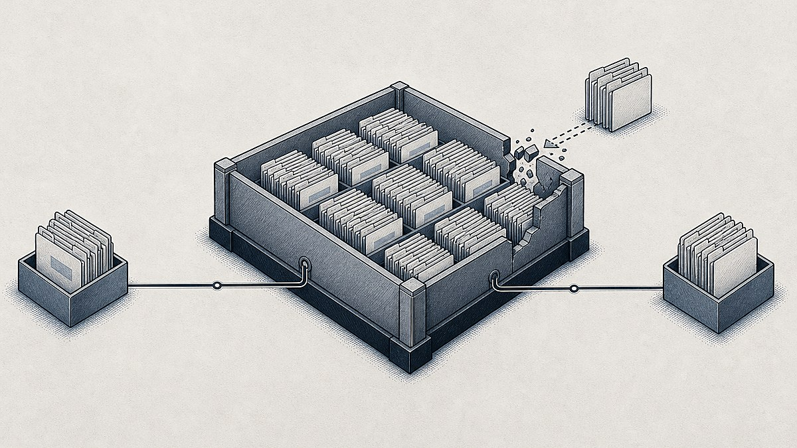

Conduent Data Breach: What Happened and What to Do Now
In short
The Conduent data breach involved unauthorized access to files between October 21, 2024, and January 13, 2025. As of October 6, 2026, Wisconsin’s breach registry lists 25+ million people affected. If you received a notice, verify it independently, freeze credit when sensitive identifiers are involved, and watch accounts for misuse. SEC filing Wisconsin breach registry
Quick answer: The Conduent data breach involved unauthorized access to files between October 21, 2024, and January 13, 2025. As of October 6, 2026, Wisconsin’s breach registry lists 25+ million people affected. If you received a notice, verify it independently, freeze credit when sensitive identifiers are involved, and watch accounts for misuse.
Table of Contents
- What happened in the Conduent data breach?
- Why do reports use different affected-person totals?
- What information may have been exposed?
- Is a Conduent data breach notice legitimate?
- What should you do after a Conduent breach notice?
- What is happening with Conduent data breach lawsuits?
- What else do people ask about the Conduent data breach?
- What should you remember first?
What happened in the Conduent data breach?

Conduent said it discovered an operational disruption and unauthorized access to a limited part of its environment on January 13, 2025. A client substitute notice says the unauthorized party accessed Conduent’s environment between October 21, 2024, and January 13, 2025, and obtained certain files containing protected health information. Conduent’s April 2025 SEC filing Client substitute notice
Conduent’s SEC filing says the files were associated with a limited number of clients, but contained personal information relating to a significant number of those clients’ end users. The company said it engaged cybersecurity data-mining experts to assess the exfiltrated files, notified law enforcement, and continued working with clients on legally required notices.
The key point is that Conduent is a service provider. A person may receive a notice because a health insurer, employer, government benefit program, or other organization used Conduent for back-office services, even if that person has never knowingly opened an account with Conduent.
Why do reports use different affected-person totals?
There is no single public number that fully explains the Conduent data breach across every client, state, and notification round. The official records reviewed for this guide range from client-level notices to a Wisconsin registry entry listing 25+ million affected people nationwide. Wisconsin breach registry
That difference does not automatically mean one report is false. It more likely reflects different reporting dates, different client populations, and the distinction between people covered by a notification process and people represented in one client’s notice. This is an inference from the records, not a confirmed explanation from Conduent.
The Wisconsin registry lists names, addresses, dates of birth, Social Security numbers, health insurance details, and medical information among the data accessed, while noting that the information varied by person. Texas Attorney General Ken Paxton’s office said in February 2026 that its investigation concerned sensitive data of approximately four million Texans, including protected health information. Wisconsin breach registry Texas attorney general notice
Treat a headline total as context, not as a substitute for reading the information listed in your own notice.
What information may have been exposed?
The information potentially exposed varies by person and by the organization connected to the notice. A client substitute notice lists contact information, date of birth, Social Security number, health-plan member ID, and treatment-payment amount among the possible data elements. Client substitute notice
That matters because the right response depends on the specific information named in your letter. A notice involving only contact details calls for a different level of urgency than one naming a Social Security number, health insurance ID, or financial information.
Public notices reviewed for this guide do not list passwords among the potentially accessed data elements. Still, do not assume that a breach notice eliminates account risk. Personal details can make phishing messages more convincing, especially when scammers know a recipient’s name, insurer, employer, or partial identifying information.
One client substitute notice said Conduent was not aware of misuse of the relevant data when that notice was published. That statement is not proof that misuse has never happened, and it does not replace checking your own accounts. Client substitute notice
Is a Conduent data breach notice legitimate?
A Conduent-related breach notice can be legitimate, but a letter, email, text, or phone call should not be trusted solely because it uses a recognizable company name. California’s attorney general maintains a submitted sample notice for Conduent Business Services, LLC that identifies the October 21, 2024, to January 13, 2025 incident window. California attorney general sample-notice record
Use independent checks before entering personal information or activating any service. The Federal Trade Commission advises people not to click links in unexpected messages and to contact an organization through a phone number, email address, app, or website they already know is genuine. FTC phishing guidance
Use these four checks:
- Read the data list. A real notice should say what information may have been involved, not only make a vague demand for urgent action.
- Match the incident dates. The official notices reviewed for this guide reference October 21, 2024, through January 13, 2025.
- Verify through a separate channel. Visit your insurer, employer benefits portal, government program, or Conduent’s official site by typing the known address yourself. Do not begin with a link in an unexpected email or text.
- Keep the letter. Save the notice, envelope, enrollment instructions, and dates. They may matter if you need to dispute an account or review a future legal notice.
A breach letter can be authentic and still be followed by fake messages that copy its language. Treat any pressure to pay, disclose a password, provide a one-time verification code, or give remote computer access as a warning sign.
What should you do after a Conduent breach notice?
Start with the information actually listed in your notice, then take the protective steps that match that information. If your Social Security number or similar high-risk identifier was involved, a credit freeze is one of the strongest actions available because it makes it harder for someone to open a new credit account in your name. FTC credit-freeze guidance
A credit freeze is free, does not affect your credit score, and stays in place until you lift it. You must contact Equifax, Experian, and TransUnion separately to place a freeze, and you will need to temporarily lift it when a legitimate lender needs access to your report. FTC credit-freeze guidance
Use this response checklist:
- Place a credit freeze if the notice names your Social Security number or another identifier that could support new-account fraud. A freeze does not stop unauthorized charges on an existing card, so keep checking financial statements.
- Enroll in any free monitoring only after independently verifying the enrollment route. The Wisconsin registry says free monitoring was offered to some, but not all, affected customers. Check the enrollment deadline in your individual notice. Wisconsin breach registry
- Review your credit reports and accounts. Look for unfamiliar accounts, inquiries, benefit claims, explanations of benefits, address changes, or bills. The FTC directs people with identity-theft issues to IdentityTheft.gov for a personalized recovery plan. FTC credit guidance
- Secure your email account first. Use a unique password and multi-factor authentication because email access can help an attacker reset other accounts. Readers comparing secure credential tools can review these password manager options.
- Expect phishing attempts. A breach can give scammers believable details to use in fake notices. Use the practical checks in this guide to protect against AI-powered phishing, especially before sharing personal information or entering a verification code.
- Report actual misuse promptly. If you find fraud, use IdentityTheft.gov, contact the affected account provider, and keep copies of every report and response.
The best response is not panic or blanket password resets. It is a documented, proportionate plan based on the exact data named in your notice.
What is happening with Conduent data breach lawsuits?
Multiple lawsuits brought by people who allegedly received Conduent notification letters were consolidated in the U.S. District Court for the District of New Jersey. Conduent’s second-quarter 2026 filing says plaintiffs filed an amended consolidated complaint on June 12, 2026, and that the litigation was stayed through September 7, 2026, while the parties explored a potential resolution. Conduent’s Q2 2026 Form 10-Q
The same filing says Conduent denies the plaintiffs’ allegations, says it believes it has strong defenses, and cannot predict the outcome. The filing did not announce a settlement or a consumer payout, so do not rely on posts or advertisements claiming a confirmed payment amount without checking current court documents.
Separately, the Texas attorney general announced an investigation on February 12, 2026, and said its office had requested documents from Conduent and Blue Cross Blue Shield of Texas. An investigation is not a finding of liability, but it is a reason to watch official updates rather than rumor-driven posts. Texas attorney general notice
What else do people ask about the Conduent data breach?
What are the top 10 data breaches of all time?
There is no single official top-10 ranking that resolves every breach because organizations and regulators report different populations and data types at different times. Wisconsin lists the Conduent incident as affecting 25+ million people, while Texas described it as likely among the largest U.S. breaches. Those statements do not create one definitive ranking. Wisconsin breach registry Texas attorney general notice
Is Conduent Notice of data breach legit?
A Conduent notice may be legitimate, and California’s attorney general has a submitted sample notice for the October 2024 to January 2025 incident. Still, verify any notice through an independently found official channel before entering personal details, using an activation code, or calling a number from an unexpected email or text. California attorney general sample-notice record FTC phishing guidance
What is a Conduent?
Conduent is a business-services provider that supports commercial and government clients. Wisconsin’s breach registry says Conduent operates back-end systems for state programs, including Medicaid claims and eligibility systems, child-support payments, food assistance, and unemployment insurance. That service-provider role explains why a recipient may recognize a client organization but not Conduent itself. Wisconsin breach registry
What is the average payout for a data breach?
There is no verified Conduent payout figure in the latest company filing reviewed for this article. Conduent’s second-quarter 2026 filing says the consolidated litigation was paused while parties explored a potential resolution and that the company could not predict the outcome. Treat any claimed average payout as non-incident-specific unless a court-approved settlement states otherwise. Conduent’s Q2 2026 Form 10-Q
What should you remember first?
Read the data elements named in your own notice, verify the notice through an independent official channel, and freeze your credit if high-risk identifiers such as a Social Security number were involved. For ongoing official-source reporting on security incidents, follow Veritya Daily’s data breach coverage.
Sources
- sec.gov - Conduent April 2025 SEC filing (8-K) on the incident
- sec.gov - Conduent Q2 2026 Form 10-Q (litigation status)
- datcp.wi.gov - Wisconsin DATCP breach registry (25+ million entry; data elements; monitoring note)
- wellpoint.com - Conduent client substitute notice (incident window; data elements; no-misuse statement)
- oag.ca.gov - California AG submitted sample notice record (Conduent Business Services, LLC)
- oag.state.tx.us - Texas AG investigation announcement (Feb 12, 2026)
- consumer.ftc.gov - FTC phishing protection guidance
- consumer.ftc.gov - FTC credit-freeze and IdentityTheft.gov guidance